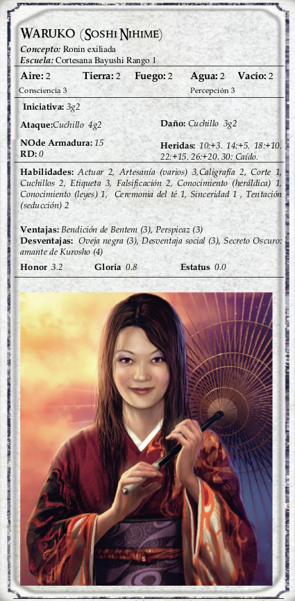

|  | Waruko fue una vez Soshi Nihime, la hija menor de los daimyo Soshi, y hermana de Soshi Shinobu. Nihime tuvo un romance con Iuchi Kurosho, cuando ella apenas tenía quince años y él tenía treinta y cinco años, siendo ya un daimyo legítimo gobernante y casado. Estaban enamorados, y Kurosho trató de obtener el permiso del daimyo del clan Unicornio para dejar de lado a su primera esposa y casarse con ella, pero su esposa era un miembro prominente de la familia Shinjo y se negaron a permitir semejante insulto. Antes de poder retomar otra solución, los padres de Nihime se enteraron sobre el asunto, y vendieron a su "ruinosa" hija a una casa de geishas donde se encontró con que estaba embarazada. Sin embargo a pesar de las demandas de su señor, Kurosho se encargó del cuidado de ella, compró su contrato y le dio una lujosa casa en la aldea del perfume de pétalos de Flor, con un generoso estipendio para criar a su hijo. Kurosho la visitaba con tanta frecuencia como podía atreverse, ganándose el afecto del jóven Naohida, viendo como el niño crecía para ser un perfecto samurái, un bálsamo para su orgullo paterno después de criar un hijo de mente tan simple como la de Daiyu. Muchas veces deseó en voz alta poder reconocer a Naohida y repudiar su inútil hijo legítimo. |